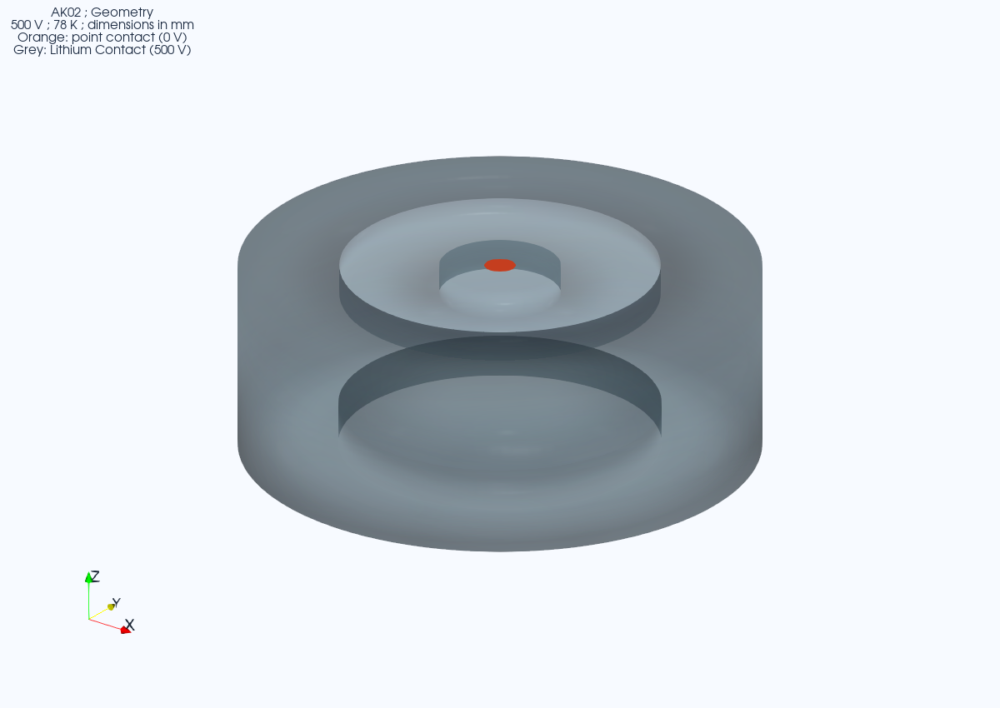

Geometry
Rotate the saved physical meshes and inspect contact IDs.
Inverted coaxial point-contact (ICPC)
Original Li-contact ICPC case.
Open this detector’s 10K result →
Control supports AK02 in the nominal LBNL modular cryostat. Use the Control instructions after setup. Fresh-machine reproduction remains unvalidated.